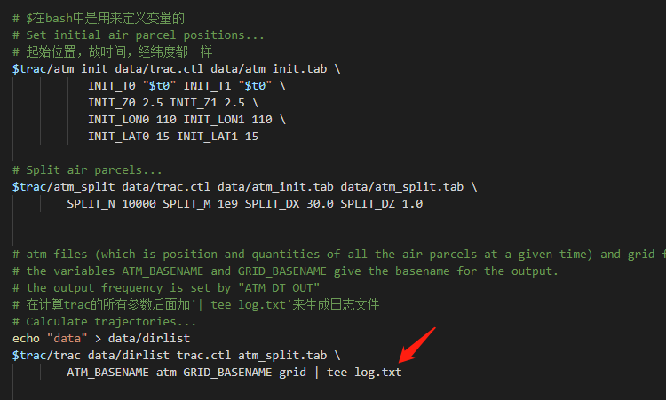
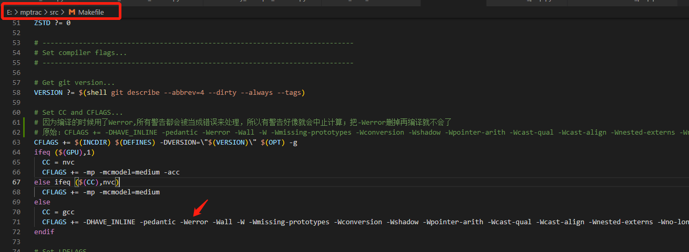

这里记录了利用 MPTRAC 模型测试的两个例子以及遇到的问题。在此过程非常感谢 MPTRAC 开发者 Dr. Lars Hoffmann 和 LMZ 的帮助，让我成功测试了自己设计的 case。
# 1. run the example
运行官网给的例子，一般前面安装没问题的话，就可以成功运行
$ cd mptrac/projects/example | |
$ ./run.sh |
重点是理解官网例子脚本的含义，方便自己后面设计实验，代码命令含义参考 Doxygen manual
# (1) first program
"trac=../../src" : src 目录下（ mptrac/src/ ）放着用来计算各种变量的源文件，这一步是用来显示路径的。在 linux 环境 “.” 表示当前工作目录， “./script” 表示执行当前工作目录的脚本文件， “..” 表示当前目录的上一级；因为 run.sh 文件在 mptrac/projects/example/ 下，要调用 src 下面的包，则需要先返回到 mptrac 目录下，即 “…/…/”
"rm -rf data plots && mkdir -p data plots" : 每次在创建新的文件夹存放数据和画图前先删除上次的结果，防止出错。因为此文件位置在 mptrac/projects/example 下，所以生成的 data 和 plots 文件夹均在相同目录下，之后出现的 data/文件 均表示 mptrac/projects/example/data/ 目录下的对应文件
"time2jsec" : Convert date to Julian seconds， t0,t1 分别是模拟开始和结束的时间
# Setup... | |
trac=../../src | |
# Create directories... | |
rm -rf data plots && mkdir -p data plots | |
# Set timestep and timerange of simulation... | |
t0=$($trac/time2jsec 2011 6 5 0 0 0 0) | |
t1=$($trac/time2jsec 2011 6 8 0 0 0 0) |
# (2) second program
在 bash 中 EOF 是把多行输入作为一个 program 输入 (The EOF is used in bash to provide multi line input to a program, 链接)，两个之间 EOF 之间表示 input。
the "$" symbol is used to define variables in the bash script 链接
> outputs to a file, >> appends to a file, < reads input from file. data/trac.ctl 表示的是刚刚新建的 data 目录 (mptrac/projects/example/data) 下的 trac.ctl 文件，合起来就是把计算出来的结果输出到 data 目录下的 trac.ctl 文件
NQ : Number of quantities. their names (QNT_NAME[]) and units (QNT_UNIT[])
t 气温，uvw 风速，z: Geopotential height at model levels (km)，ps 地表气压，pv 位涡，pt 对流层顶气压，h2o 水汽混合比，m: mass of species，theta 位温
其中温度，风场，海平面气压，（地表）位势高度是必须的 input（如果不是气压层数据，需要额外给模式对应的气压），水汽是根据所求的目标提供，位温位涡等变量都是模式根据提供的变量利用公式计算得到的
metbase :Basename for meteo (input) data, ../../tests/data/ei 表示模式将会读取 mptrac/tests/data/ 目录下所有以 ei 开头（或含有 ei）的输入数据，这是用来读取输入数据的。若输入数据不在 tests 目录下，则修改此命令对应目录位置即可。
remove the line “SPECIES = SO2” means the species is generic/not specified 未指定某个物质
DT_MET ：Time step of meteo data 输入气象数据的时间间隔，每两个 nc 文件之间的相差时间 (s)（例子是每 24h=24*3600s 一个输入文件）
MET_DT_OUT ：Time step for sampling of meteo data along trajectories (s) 采样时间（output）
CLIM_OH_FILENAME : Filename of OH climatology. 氢基氧基
BOUND_MASS : Boundary conditions mass per particle [kg].
BOUND_DPS : Boundary conditions delta to surface pressure [hPa].
CONV_CAPE : CAPE threshold for convection module [J/kg].
t_stop : Stop time of simulation [s].
TDEC_TROP : Life time of particles (troposphere) [s].
TDEC_STRAT : Life time of particles (stratosphere) [s]. 如果去掉这两个命令，则表示粒子有着无限长的生命周期.
grid_lon0,grid_lon1,grid_lat0,grid_lat1 : （模拟出的）格点数据经纬度边界范围.
grid_nx,grid_ny : 格点数据经纬度数据（与设置的经纬度范围一起就可以设置出经纬度间隔 / 分辨率，可与输入数据的间隔不同）
# Create control parameter file... | |
cat > data/trac.ctl <<EOF | |
NQ = 9 | |
QNT_NAME[0] = t | |
QNT_NAME[1] = u | |
QNT_NAME[2] = v | |
QNT_NAME[3] = w | |
QNT_NAME[4] = z | |
QNT_NAME[5] = pv | |
QNT_NAME[6] = ps | |
QNT_NAME[7] = pt | |
QNT_NAME[8] = m | |
METBASE = ../../tests/data/ei | |
MET_DT_OUT = 86400.0 | |
CLIM_OH_FILENAME = ../../data/clams_radical_species.nc | |
SPECIES = SO2 | |
BOUND_MASS = 0.0 | |
BOUND_DPS = 100.0 | |
CONV_CAPE = 0.0 | |
TDEC_TROP = 259200.0 | |
TDEC_STRAT = 259200.0 | |
DT_MET = 86400.0 | |
T_STOP = $t1 | |
GRID_LON0 = -90 | |
GRID_LON1 = 60 | |
GRID_LAT0 = -60 | |
GRID_LAT1 = -15 | |
GRID_NX = 300 | |
GRID_NY = 90 | |
EOF |
# (3) third program
前面定义了 trac=../../src ，用来表示 src 的目录，并用 $ 来定义此变量以便调用。 $trac/atm_init 表示调用 src 目录下 atm_init 源文件，初始化上一步读取的数据和定义的变量（data/trac.ctl），并把最后的结果输出到 atm_init.tab 文件（ tab文件是存放结果的 ）；并定义了初始化的时间、高度 [km]、经纬度，因为初始化的是一个点，所以 t/z/lon/lat_0 和 t/z/lon/lat_1 应该是相同的
接下来调用 atm_split，作用 It splits the initial small set into a larger set of air parcels (create a larger set of air parcel positions)。其中 N 是 parcel 的个数，M 是总质量，dx 和 dz 是高斯分布里面的半高宽；x 是水平方向，z 是垂直方向。
atm files (which is position and quantities of all the air parcels at a given time) and grid files (which is mean/integrated data of all the air parcels on a regular lon-lat grid).
the variables ATM_BASENAME and GRID_BASENAME give the basename for the output. For example “atm” will be expanded to “atm_2000_01_01_00_00.tab, atm_2000_01_01_06_00.tab” … 因此最后一步会计算 atm 和 grid 两种结果，并把对应的结果存放在 atm_xxx.tab 和 grid_xxx.tab 文件里。
the output frequency is set by ATM_DT_OUT
# Set initial air parcel positions... | |
$trac/atm_init data/trac.ctl data/atm_init.tab \ | |
INIT_T0 "$t0" INIT_T1 "$t0" \ | |
INIT_Z0 10.0 INIT_Z1 10.0 \ | |
INIT_LON0 -72.117 INIT_LON1 -72.117 \ | |
INIT_LAT0 -40.59 INIT_LAT1 -40.59 | |
# Split air parcels... | |
$trac/atm_split data/trac.ctl data/atm_init.tab data/atm_split.tab \ | |
SPLIT_N 10000 SPLIT_M 1e9 SPLIT_DX 30.0 SPLIT_DZ 1.0 | |
# Calculate trajectories... | |
echo "data" > data/dirlist | |
$trac/trac data/dirlist trac.ctl atm_split.tab \ | |
ATM_BASENAME atm GRID_BASENAME grid |
# (4) fourth program
echo 命令的输出内容如果没有特殊含义，则原内容输出到屏幕；如果输出内容有特殊含义，则输出打印其含义。echo 命令的功能是在显示器上显示一段文字， 一般起到一个提示的作用
for 循环与 do,echo,done 一起用
ls data/atm_2011*tab ：ls 表示打印出当前目录的清单，这个命令就是打印出 mptrac/projects/example/data/ 目录下含有 atm_2011 的 tab 文件的文件名；放到 for 循环里， f 就是含有 atm_2011 的文件名（如 atm_2000_01_01_00_00.tab, atm_2000_01_01_06_00.tab,…）
echo "Plot $f ..." 这一句命令是输出到显示屏上，提醒现在画的是哪一副图； set out "plots/$(basename $f).png" 是 gnuplot 的绘图命令，表示最后生成图片的名字（输出文件名）
$(basename "$f" .tab | awk 'BEGIN{FS="_"}{print $2"-"$3"-"$4", "$5":"$6" UTC"}' ：basename 命令会删掉所有的前缀包括最后一个 slash（‘/’）字符，然后将字符串显示出来； basename "$f" .tab 就是把 f 的文件名去掉 .tab ，只留前面的文件名。awk 是 bash 里的文本处理工具（遍历文本）,FS (Field Separator) 是与 awk 连用的列分割符：决定了将一行划分为几段，预设值是 空白符 (空白和 Tab)。
所以这一句的命令就是把 f对应的文件名(如atm_2011_06_05_00_00.tab) 去掉.tab 后剩下的文件名 ( 如atm_2011_06_05_00_00 )，遍历文本，用 _ 分割为 6 份（用 1-6 数字表示，如 1 表示 atm），之后输出 2-6 的内容，并用 - 和 : 连接，所以最后 t 的内容就是如 2011-06-05,00:00
set terminal pngcairo size 1000,1000 font 'Times New Roman,10' 格式，大小和字体
cbra colorbar range
cbla colorbar label
set mxticks 设置 x 轴子刻度数目
plot 用于绘制 2D 函数和数据，关于 gnuplot 画图的详细命令可以看超详细的 gnuplot 使用教程。gnuplot 可以读取 txt,dat 等格式文件。
plot "$f" 表示读取 tab 文件， u 3:4:(1.*\$2) u=using，表示用文件的第三，四列作图； w d lc pal z t "" ,w=with (with 后边跟需要指定的样式), d=dots 每一点绘一细点， lc=line color 曲线颜色， t "" t=title 标题为空
"../data/wcl.tab" u 1:2 w l lt -1 t "" 读取 wcl.tab 文件的数据的前两列（u 1:2 表示使用文件中 1，2 列作为 x，y 作图）， l=line ：用曲线表示， lt -1 ：lt=LineType 线型，主要设置的是线条颜色，-1 表示颜色，标题为空
"-" u 1:2 w p pt 9 ps 3 lc rgbcolor "red" t "" 读取文件前两列， p:points 用点表示， pt 9 :pointtype 点的样式 / 形状是实心正三角， ps 3 ：pointsize 点的大小是 3, lc rgbcolor "red" 曲线颜色是红色，标题为空
# Plot air parcel data... | |
echo | |
for f in $(ls data/atm_2011*tab) ; do | |
echo "Plot $f ..." | |
t=$(basename "$f" .tab | awk 'BEGIN{FS="_"}{print $2"-"$3"-"$4", "$5":"$6" UTC"}') | |
gnuplot <<EOF | |
set out "plots/$(basename $f).png" | |
set term png truecolor crop linewidth 2 font "Helvetica" 24 size 1440,900 | |
set size ratio 0.75 | |
set pal def | |
set cbra [5:15] | |
set cbla "altitude [km]" | |
set xla "longitude [deg]" | |
set yla "latitude [deg]" | |
set xtics 30 | |
set ytics 10 | |
set mxtics 6 | |
set mytics 5 | |
set xra [-90:60] | |
set yra [-60:-15] | |
set grid | |
set title "MPTRAC | $t" | |
plot "$f" u 3:4:(1.*\$2) w d lc pal z t "", \ | |
"../data/wcl.tab" u 1:2 w l lt -1 t "", \ | |
"-" u 1:2 w p pt 9 ps 3 lc rgbcolor "red" t "" | |
-72.117 -40.59 | |
e | |
EOF | |
done |
# (5) fifth program
在这一部分命令与上面一个大致相同，但 splot 绘制 3D 曲面和数据的 2D 投影。
set pm3d 设置当前为 pm3d 模式，构造一个有颜色的非透明的图形（三维）
set pal def () 改变 pm3d 默认色板
# Plot grid data... | |
for f in $(ls data/grid_2011*tab) ; do | |
echo "Plot $f ..." | |
t=$(basename "$f" .tab | awk 'BEGIN{FS="_"}{print $2"-"$3"-"$4", "$5":"$6" UTC"}') | |
gnuplot <<EOF | |
set out "plots/$(basename $f).png" | |
set term png truecolor crop linewidth 2 font "Helvetica" 24 size 1440,900 | |
set size ratio 0.75 | |
set pm3d map interp 4,4 | |
set pal def (0 'gray90', 1 'blue', 2 'cyan', 3 'green', 4 'yellow', 5 'orange', 6 'red') | |
set cbla "column density [g/m^2]" | |
set cbra [0:1] | |
set xla "longitude [deg]" | |
set yla "latitude [deg]" | |
set xtics 30 | |
set ytics 10 | |
set mxtics 6 | |
set mytics 5 | |
set xra [-90:60] | |
set yra [-60:-15] | |
set grid | |
set title "MPTRAC | $t" | |
splot "$f" u 3:4:(1e3*\$8) t "", \ | |
"../data/wcl.tab" u 1:2:(0) w l lt -1 t "", \ | |
"-" u 1:2:3 w p pt 9 ps 3 lc rgbcolor "red" t "" | |
-72.117 -40.59 0 | |
e | |
EOF | |
done |
# 2. run the case of 2021 Henan precipitation
据开发者 Lars 所言： Preparing/converting the meteo data for use with MPTRAC is maybe the most difficult step in getting the model running for a new study 。对使用 MPTRAC 的人来说，准备数据是最麻烦也最容易出错的一个过程，以之前跑 MPTRAC 的经验来说，当 input data 不符合 MPTRAC 的要求时，model 往往会报错。故我们首先需要了解 input data 时哪些。
根据原文:
At a minimum, MPTRAC requires 3-D fields of temperature T , zonal wind u , and meridional wind v . The vertical velocity ω , specific humidity q , ozone mass mixing ratio x_O3 , cloud liquid water content ( CLWC ), cloud rain water content ( CRWC ), cloud ice water content ( CIWC ), and cloud snow water content ( CSWC ) are optional but often needed for specific applications. The model also requires the surface pressure ps or log-surface pressure ( ln ps ) and the geopotential height at the surface Z_g to be provided as 2-D fields . Optionally, near-surface temperature T_2m and near-surface winds ( u_10m,v_10m ) can be ingested from the input files.
The model requires the input data in terms of separate NetCDF files at regular time steps. all the meteo variables will be have to be included in the same file.
也就是说 input data 必须需要包含 三维数据（pressure levels）：温度t，风场uvw，比湿q，臭氧O3 ； 二维数据（surface level）:地表气压ps，地表位势高度z 。除此之外，我们还习惯在 input data 里加入一些其它三维数据：云水、云雨、云冰、云雪含量（ clwc,crwc,ciwc,cswc ）和二维数据：地表 2 米气温（ t2m ）和 10 米风速（ u10m,v10m ）。
需要注意的是，input data 是按时间来区分的，也就是说准备每一个的 input data 都只有一个时间（ 时间维度是1 ），并且应该包含所有所需变量。
重点!
- input data 文件命名形式
ei_20xx_MM_DD_00.nc，没有分钟项 - MPTRAC 的时间是 double，如
20180719.5表示2018年7月19日中午12点 - MPTRAC 通过
name of the dimension来区分 input data，而不是常见的standard name或long name，dimension 的 name 必须是time,lev,lat,lon - input data 必须是
全球数据（0：360.-90：90），不可以是提前处理好的某一区域数据（即使研究范围不是全球也要输入全球数据），不然在读完第一个时段的数据后会一直卡着不动 - input data 的变量名形式必须完全统一，全部大写或全部小写（
CIWC,CIWC或ciwc,clwc）。此外对变量名称也有要求，必须与模式规定的变量名一致，即与上面原文写的变量名一致（如 era5 中地表气压的变量是sp，模式不能识别，能够识别的是ps或lnsp） - 压力数据必须是
降序(从高到低，1000 hPa, 900 hPa, 850 hPa…)，不然报错：pressure levels must be descending - input data 可以没有
o3（常见的大气科学研究中一般不需要），臭氧数据是用来计算化学反应的，若没有 o3 数据模式只会出现警告（warning）而不会报错（error）
# (1) first method
若出现报错： Eorror: NetCDF: Invaild dimension ID or name ，说明维度名没有改正确，要把 time,level,latitude,longitude 改成 time,lev,lat,lon 。
修改方法 1
ds_new = d.swap_dims({'latitude':'lat', 'longitude':'lon', 'level':'lev'}) # 将维度名称 level,latitude,longitude 改成 lev,lat,lon | |
cc = ds_new.rename({'latitude':'lat', 'longitude':'lon', 'level':'lev'}) # 将对应的维度坐标名修改 | |
cc.to_netcdf('path/xxx.nc') |
# (2) second method
修改方法 2
除了上面那个方法外，还可以重新构造一个新的 dataset 对维度名进行修改，不过这种方法稍微有点麻烦，适合重构数据情况（如压力坐标和变量名不合要求），常见于 ERA5 数据。ERA5 数据的 pressure level 是升序，且变量名地表气压 sp ，地表 10 米风速 u10,v10 是不合模式要求的，要改成 ps , u10m , v10m 。需要注意的是，除了气压坐标 level 数据需要变成 descend 外，含有 level 维度的变量也需要对应修改，变成 descend。( 此处数据处理有一个小问题，更新见第四小节 )
import xarray as xr | |
import numpy as np | |
# read file | |
dir = 'path' | |
a = xr.open_dataset(dir + 'xxx.nc') | |
# flip 3-D variables and level | |
ciwc = np.flip(a.ciwc.values, axis=1) | |
clwc = np.flip(a.clwc.values, axis=1) | |
q = np.flip(a.q.values, axis=1) | |
t = np.flip(a.t.values, axis=1) | |
u = np.flip(a.u.values, axis=1) | |
v = np.flip(a.v.values, axis=1) | |
w = np.flip(a.w.values, axis=1) | |
lev = np.flip(a.level.values, axis=0) # descend | |
# read 2-D variables and coordinates, modify names | |
u10m = a.u10.values # 只能识别 u10m，不能识别 u10 | |
v10m = a.v10.values | |
t2m = a.t2m.values | |
z = a.z.values | |
ps = a.sp.values # ps， 非 sp | |
lon = a.longitude.values | |
lat = a.latitude.values | |
time = a.time.values | |
# create a new dataset | |
ds = xr.Dataset({'ciwc': (['time', 'lev', 'lat', 'lon'], ciwc), | |
'clwc': (['time', 'lev', 'lat', 'lon'], clwc), | |
'q': (['time', 'lev', 'lat', 'lon'], q), | |
't': (['time', 'lev', 'lat', 'lon'], t), | |
'u': (['time', 'lev', 'lat', 'lon'], u), | |
'v': (['time', 'lev', 'lat', 'lon'], v), | |
'w': (['time', 'lev', 'lat', 'lon'], w), | |
'u10m': (['time', 'lat', 'lon'], u10m), | |
'v10m': (['time', 'lat', 'lon'], v10m), | |
't2m': (['time', 'lat', 'lon'], t2m), | |
'z': (['time', 'lat', 'lon'], z), | |
'ps': (['time', 'lat', 'lon'], ps)}, | |
coords={"time": time, | |
"lev": lev, | |
"lat": lat, | |
"lon": lon, | |
}) | |
# add attributes (optional) | |
ds['time'].attrs['standard_name'] = 'time' | |
ds['lev'].attrs['long_name'] = 'pressure' | |
ds['lev'].attrs['units'] = 'hPa' | |
ds['lat'].attrs['long_name'] = 'latitude' | |
ds['lat'].attrs['units'] = 'degrees_north' | |
ds['lon'].attrs['long_name'] = 'longitude' | |
ds['lon'].attrs['units'] = 'degrees_east' | |
ds['ciwc'].attrs['long_name'] = 'Cloud ice water content' | |
ds['ciwc'].attrs['units'] = 'kg kg**-1' | |
ds['clwc'].attrs['long_name'] = 'Cloud liquid water content' | |
ds['clwc'].attrs['units'] = 'kg kg**-1' | |
ds['q'].attrs['long_name'] = 'Specific humidity' | |
ds['q'].attrs['units'] = 'kg kg**-1' | |
ds['t'].attrs['long_name'] = 'Temperature' | |
ds['t'].attrs['units'] = 'K' | |
ds['u'].attrs['long_name'] = 'U velocity' | |
ds['v'].attrs['long_name'] = 'V velocity' | |
ds['u'].attrs['units'] = 'm s**-1' | |
ds['v'].attrs['units'] = 'm s**-1' | |
ds['w'].attrs['long_name'] = 'Vertical velocity' | |
ds['w'].attrs['units'] = 'Pa s**-1' | |
ds['u10m'].attrs['long_name'] = '10 metre U wind component' | |
ds['v10m'].attrs['long_name'] = '10 metre V wind component' | |
ds['u10m'].attrs['units'] = 'm s**-1' | |
ds['v10m'].attrs['units'] = 'm s**-1' | |
ds['t2m'].attrs['long_name'] = '2 metre temperature' | |
ds['t2m'].attrs['units'] = 'K' | |
ds['z'].attrs['standard_name'] = 'Geopotential' | |
ds['z'].attrs['units'] = 'm**2 s**-2' | |
ds['ps'].attrs['standard_name'] = 'Surface_pressure' | |
ds['ps'].attrs['units'] = 'Pa' | |
# generate a new netcdf file | |
ds.to_netcdf(dir + 'xxx.nc') |
# (3) notice
MPTRAC 跑的结果都存在 tab文件 里，虽然官网例子代码读取了 wcl.tab 文件，但 wcl 是画图用的世界地图轮廓，所以只需要读 atm_xxx.tab 和 grid_xxx.tab 就可以了。
输出变量结果直接打开 tab 文件即可， 1，2，... 分别表示第几列，如 $3 = longitude [deg] 表示下面第三列是经度输出数据
此外，据 Lars 所言，MPTRAC 并不适用于边界层的计算，在边界层没有很好的参数化方案，也不适合以 p 坐标作为垂直坐标
Just one warning, the MPTRAC model is not designed for the planetary boundary layer (PBL). You can calculate trajectories down to the surface, with surface pressure being the lower boundary of the model. But the MPTRAC model does not have advanced parametrizations of diffusivity in the PBL and pressure as vertical coordinate is also not best choice for the PBL. Our colleagues looking at transport to the surface usually pick the top of the PBL (maybe ~ 1-2 km of altitude above the surface) as the lower boundary to identify the origin/source region of a trajectory.
# 3. reference
(1) MPTRAC-Github
(2) MPTRAC-website/Doxygen manual or MPTRAC wiki
(3) GMD-paper
(4) 超详细的 gnuplot 使用教程
(5) GNUPLOT 使用小结
(6) Linux 常用命令 - awk
(7) SHELL——awk 两个特殊模式（BEGIN 和 END）及 awk 高级应用（条件判断、循环）
(8) linux 批量修改分隔符
(9) shell 命令 basename
(10) shell 脚本 for 循环
(11) 在 shell 脚本中使用 ls 命令的注意事项
# 4. update on 15 Oct 2022
这一小节记录一些在用 MPTRAC 时新遇到的问题并更正一些错误 (2022.10.15 更新)
之前的重点内容仍然正确且适用，这里补充一些之前遗漏的
新增重点!
- 压力坐标（pressure level）的单位必须与地表气压的单位一致，都是 Pa；且垂直方向的层数尽可能多，以便 MPTRAC 在垂直插值的结果正确
- initial heights z are actually log-pressure heights
- Z output should be geopotential height, and it can be negative if the pressure exceeds the mean slp geoid pressure (i.e., 1013.25 hPa)
- 使用小时数据作为输入数据时，需要新增
ATM_DT_OUT和GRID_DT_OUT这两个命令 - 进行后向轨迹模拟时，需要增加
Direction=-1这个命令，且起始时间和终止时间需要互换 - 想要生成运行日志（以 log 开头的文件），则在运行 trac 的时候，尾巴上加上一个
| tee log.txt
解释说明
- MPTRAC 利用公式 进行气压计算，其中，z=7km 是标高；由此可知地表气压 和气压 二者在同一个公式里，因此二者单位必须统一（ERA5 数据里地表气压单位是 Pa，而压力坐标的单位是 Pa，单位并不统一）；
通过这个公式我们也知道 MPTRAC 的 输入起始高度z 是 log-pressure height ()， 输出结果Z 表示的是 位势高度 （单位是 km，与标高的单位一致），因此为保证计算结果可靠，地表气压和气压的单位应统一变为 Pa（位势高度正比于气压的对数值, 如果气压 p 值很小，则位势高度 z 的结果也很小）
此外输入数据（如 era5 数据）的垂直层数（气压层数据）应尽可能多，以便 MPTRAC 在垂直方向上的插值和外推结果合理。（第一次用 MPTRAC 时，输入数据垂直层数就很少，只有 4、5 层，因此最后模拟出的结果如位势高度 Z 出现很多负值，其它变量如温度、风速等也有很多不合理的数据，这就是因为垂直层数太少且输入的气压数据值超过了模式规定的平均地表气压值 1013.25 hPa，导致模式外推和插值的结果出现负值）
- 在利用小时数据进行输入和输出时，需要注意官网给的例子是以一天为间隔进行模拟的，因此直接套用它的代码仅能得到间隔 1 天的输出 atm 和 grid 结果，这是因为 MPTRAC 默认 atm 和 grid 的结果是一天输出一次的（
ATM_DT_OUT=86400，GRID_DT_OUT=86400），故使用小时数据的时候需要添加并修改 ATM_DT_OUT 和 GRID_DT_OUT (单位是秒)(官网例子是并没有这两个代码的，需要自己添加)
比较
ATM_DT_OUT 和 GRID_DT_OUT 表示模拟的 atm 和 grid 结果每隔多久输出一次
DT_MET ：Time step of meteo data 输入气象数据的时间间隔，每两个 nc 文件之间的相差时间 (s)（例子是每 24h 一个输入文件）；
MET_DT_OUT ：Time step for sampling of meteo data along trajectories 采样时间（模式模拟的结果的输出间隔时间 / 每隔多久模拟一次）
-
官网给的例子是计算前向轨迹的，如果设置
后向轨迹计算，一方面需要起始时间和终止时间需要互换，也就是起始时间是常规的事件结束的时间（t0=t），终止时间是事件开始时间（t1=t-x）；另一方面，需要在 trac.ctl 里面添加Direction ＝ -1。
direction 就是反向轨迹的开关，ctl就是控制参数，trac.ctl 就是控制 trac 的参数，而 direction 是 trac 这个程序（计算轨迹）的参数，所以放在里面。
其实这些命令的位置不是这么重要，甚至可以把 $trac/atm_init（设置初始条件）这一部分的 init_t0 那些放进 trac.ctl 里面，不过这个是单独给 atm_init 这个程序的参数，所以单独拎出来
这三个atm_init，atm_split，trac分别表示三个程序（设置初始条件，分割粒子，计算轨迹），关于里面的参数一部分在源码里，一部分在第二部分 trac.ctl 文件里
至于为啥 atm_init 也会调用 trac.ctl 文件，这是因为那些变量 qnt name 也是需要的，具体需要哪些参数，可以查一下 atm_init 代码里面。
trac.ctl 和 trac 的区别是：trac.ctl 是参数文件，而 trac 是计算程序 -
正常运行 MPTRAC 是没有产生运行日志的（都在终端命令行显示了），如果想要生成运行日志（以 log 开头的文件），则在运行 trac 的时候，尾巴上加上一个
| tee log.txt
 -
编译的时候用了
Werror，所有警告都会被当成错误来处理（所以有警告好像就会中止，但其实并没没有终止）。为防止因为警告而终止编译，把mptrac/src/下面的Makefile文件里面的-Werror删掉再编译，修改完成后保存，在 mptrac/src/ 目录下再重新编译make（make 就是编译命令）。

因为之前未统一地表气压和气压坐标的单位，代码有小问题，现修改如下
# make era5 data compatible with the MPTRAC model input data | |
# make era5 data pressure levels be descending and make pressure levels unit from hPa to Pa | |
# select 27 levels to make the mptrac interpolation/extrapolation reasonable | |
import xarray as xr | |
import numpy as np | |
# read file | |
dir = 'path' | |
a = xr.open_dataset(dir + 'xxx.nc') | |
# flip 3-D variables and level | |
ciwc = np.flip(a.ciwc.values, axis=1) | |
clwc = np.flip(a.clwc.values, axis=1) | |
q = np.flip(a.q.values, axis=1) | |
t = np.flip(a.t.values, axis=1) | |
u = np.flip(a.u.values, axis=1) | |
v = np.flip(a.v.values, axis=1) | |
w = np.flip(a.w.values, axis=1) | |
lev = np.flip(a.level.values, axis=0)*100 # descend, from hPa to Pa | |
# read 2-D variables and coordinates, modify names | |
u10m = a.u10.values # 只能识别 u10m，不能识别 u10 | |
v10m = a.v10.values | |
t2m = a.t2m.values | |
z = a.z.values | |
ps = a.sp.values # ps， 非 sp | |
lon = a.longitude.values | |
lat = a.latitude.values | |
time = a.time.values | |
# create a new dataset | |
ds = xr.Dataset({'ciwc': (['time', 'lev', 'lat', 'lon'], ciwc), | |
'clwc': (['time', 'lev', 'lat', 'lon'], clwc), | |
'q': (['time', 'lev', 'lat', 'lon'], q), | |
't': (['time', 'lev', 'lat', 'lon'], t), | |
'u': (['time', 'lev', 'lat', 'lon'], u), | |
'v': (['time', 'lev', 'lat', 'lon'], v), | |
'w': (['time', 'lev', 'lat', 'lon'], w), | |
'u10m': (['time', 'lat', 'lon'], u10m), | |
'v10m': (['time', 'lat', 'lon'], v10m), | |
't2m': (['time', 'lat', 'lon'], t2m), | |
'z': (['time', 'lat', 'lon'], z), | |
'ps': (['time', 'lat', 'lon'], ps)}, | |
coords={"time": time, | |
"lev": lev, | |
"lat": lat, | |
"lon": lon, | |
}) | |
# add attributes (optional) | |
ds['time'].attrs['standard_name'] = 'time' | |
ds['lev'].attrs['long_name'] = 'pressure' | |
ds['lev'].attrs['units'] = 'Pa' | |
ds['lat'].attrs['long_name'] = 'latitude' | |
ds['lat'].attrs['units'] = 'degrees_north' | |
ds['lon'].attrs['long_name'] = 'longitude' | |
ds['lon'].attrs['units'] = 'degrees_east' | |
ds['ciwc'].attrs['long_name'] = 'Cloud ice water content' | |
ds['ciwc'].attrs['units'] = 'kg kg**-1' | |
ds['clwc'].attrs['long_name'] = 'Cloud liquid water content' | |
ds['clwc'].attrs['units'] = 'kg kg**-1' | |
ds['q'].attrs['long_name'] = 'Specific humidity' | |
ds['q'].attrs['units'] = 'kg kg**-1' | |
ds['t'].attrs['long_name'] = 'Temperature' | |
ds['t'].attrs['units'] = 'K' | |
ds['u'].attrs['long_name'] = 'U velocity' | |
ds['v'].attrs['long_name'] = 'V velocity' | |
ds['u'].attrs['units'] = 'm s**-1' | |
ds['v'].attrs['units'] = 'm s**-1' | |
ds['w'].attrs['long_name'] = 'Vertical velocity' | |
ds['w'].attrs['units'] = 'Pa s**-1' | |
ds['u10m'].attrs['long_name'] = '10 metre U wind component' | |
ds['v10m'].attrs['long_name'] = '10 metre V wind component' | |
ds['u10m'].attrs['units'] = 'm s**-1' | |
ds['v10m'].attrs['units'] = 'm s**-1' | |
ds['t2m'].attrs['long_name'] = '2 metre temperature' | |
ds['t2m'].attrs['units'] = 'K' | |
ds['z'].attrs['standard_name'] = 'Geopotential' | |
ds['z'].attrs['units'] = 'm**2 s**-2' | |
ds['ps'].attrs['standard_name'] = 'Surface_pressure' | |
ds['ps'].attrs['units'] = 'Pa' | |
# generate a new netcdf file | |
ds.to_netcdf(dir + 'xxx.nc') | |
a.close() |